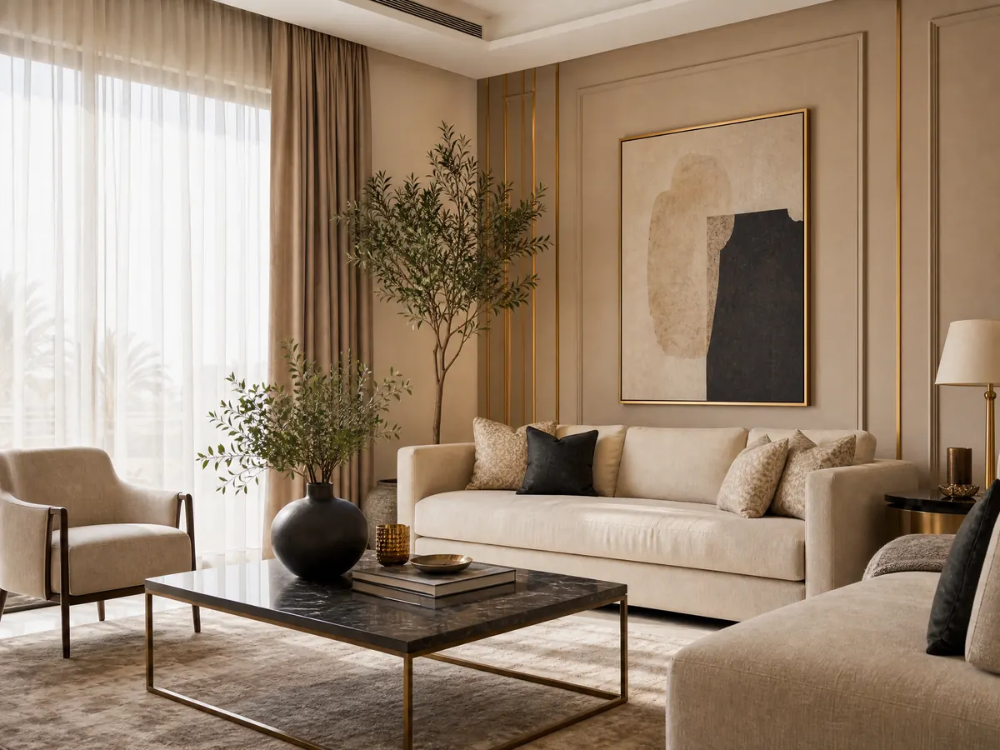

روعة التنفيذ وجودة الخامات مع عامل دهانات الرياض:0531169312
يمنحك البحث عن عامل دهانات الرياض فرصة لتجديد منزلك وتحسين مظهر الجدران لكن الوصول إلى النتيجة التي تتخيلها يتطلب تحديد احتياجاتك بدقة واختيار الألوان المناسبة، والتخطيط لتفاصيل التشطيب قبل بدء التنفيذ فالدهانات ليست مجرد تغيير لوني، بل عنصر مؤثر في هوية المساحة وطابعها العام.
سواء كنت تستعد لتجديد شقة أو إعادة ترتيب مظهر الفيلا أو تحديث بعض الغرف، فإن دراسة الخيارات المتاحة تساعدك على اتخاذ قرار يناسب ذوقك وميزانيتك ويمكنك أيضًا التفكير في تنسيق الدهانات مع عناصر الديكور الداخلي، مثل الجبس بورد وورق الجدران والباركيه للوصول إلى تصميم متكامل يبرز جمال المكان ويمنحه مظهرًا أكثر انسجام.
عامل دهانات الرياض
عند البحث عن عامل دهانات الرياض لا تجعل السعر وحده أساس الاختيار فطبيعة العمل والتشطيب المطلوب والتفاصيل التي يشملها الاتفاق عوامل مهمة لتحديد الخيار المناسب، وتساعدك الخطوات التالية على تقييم العروض بطريقة عملية قبل اتخاذ قرارك:
- تحديد نطاق العمل: وضح عدد الغرف والجدران المطلوب تنفيذها، وحدد ما إذا كان المشروع يقتصر على تغيير الألوان أم يتضمن أعمالًا إضافية.
- مراجعة نماذج التنفيذ: اطلب الاطلاع على أعمال سابقة مشابهة لمشروعك، واهتم بتناسق الألوان ودقة الحواف ومظهر الأسطح.
- اختيار المواد المناسبة: تعرف على نوع الدهان وخصائصه ومدى ملاءمته للغرف التي ترغب في تجديدها.
- الاتفاق على التفاصيل: حدد الأعمال المشمولة في السعر والمدة المتوقعة وطريقة مراجعة النتيجة بعد الانتهاء.
- مقارنة العروض: قارن بين عروض متقاربة في الخامات ونطاق التنفيذ، حتى لا تختار عرضًا منخفضًا ثم تكتشف أنه لا يشمل بعض الاحتياجات الأساسية.
دهان بويه الرياض: كيف تختار التشطيب المناسب؟
تختلف احتياجات الجدران بحسب طبيعة المكان والتصميم المرغوب فهناك من يبحث عن مظهر هادئ وبسيط، وهناك من يفضل إضافة تفاصيل لونية تميز بعض المساحات، ويساعد تحديد النتيجة المطلوبة على اختيار عامل دهانات الرياض المناسب لتشطيب متوافق مع الاستخدام اليومي للغرفة:
- الدهانات الداخلية: اختر درجات تتماشى مع الأثاث والأرضيات والإضاءة، مع مراعاة طبيعة استخدام كل غرفة.
- دهانات المجالس: يمكن تنسيق الألوان مع الأثاث والستائر لإبراز الطابع العام للمجلس دون ازدحام بصري.
- غرف النوم: تمنح الدرجات الهادئة المساحة مظهرًا مريحًا، خاصة عند تنسيقها مع الإضاءة والأقمشة المحيطة.
- الجدران المميزة: يمكن تخصيص جدار بلون مختلف لإضافة نقطة جذب واضحة، بشرط انسجامه مع بقية عناصر الغرفة.
- التشطيبات الخاصة: إذا كنت ترغب في ملمس أو تأثير بصري مختلف، فحدد نوع التشطيب المطلوب وتكلفته وطريقة العناية به قبل الاتفاق.
اقرأ أيضًا: أفضل معلم دهانات وديكورات بالرياض
كيف يؤثر اختيار الألوان في شكل الغرف؟
اللون الذي يبدو مناسب على شاشة الهاتف قد يظهر بصورة مختلفة داخل المنزل إذ تتداخل معه الإضاءة الطبيعية والصناعية وألوان الأثاث والأرضيات، لذلك من الأفضل اختيار عامل دهانات الرياض متميز لتجربة الدرجات في المكان الفعلي قبل اعتمادها على مساحة كبيرة:
- المساحات محدودة الاتساع: يمكن تجربة الألوان الفاتحة لخلق إحساس بصري بالاتساع، مع مراعاة توزيع الأثاث ومصادر الضوء.
- الغرف الواسعة: تتيح المساحات الأكبر خيارات متنوعة، مثل الجمع بين درجات متقاربة أو تخصيص جدار بلون أعمق.
- المنازل المفتوحة: حافظ على ترابط الألوان بين الصالة والممرات والمناطق المتصلة، حتى يبدو التصميم متناسقًا.
- الأثاث الموجود: اختر درجات تتكامل مع قطع الأثاث الحالية بدل الاضطرار إلى تغييرها لتناسب لون الجدران الجديد.
- اختبار اللون: ضع عينة صغيرة على الجدار وراقبها في أوقات مختلفة من اليوم قبل اعتماد الدرجة النهائية.
ما الذي يحدد تكلفة أعمال الدهانات؟
تختلف تكلفة الدهانات من عامل دهانات الرياض وأي عامل آخر، ومن مشروع إلى آخر بحسب مساحة العمل ونوع الخامات والتفاصيل المطلوبة، لذا فإن طلب عرض سعر واضح يساعدك على تحديد ميزانيتك وتجنب المقارنة بين عروض لا تقدم المستوى نفسه من المواد أو التنفيذ:
- مساحة الجدران: تؤثر المساحة الفعلية في كمية المواد والوقت اللازم لإنجاز العمل.
- حالة الأسطح: قد تتطلب بعض الجدران القديمة أعمال معالجة أو تسوية قبل تطبيق الدهان، وهو ما ينبغي تقييمه مسبقًا.
- نوع الخامات: تختلف المنتجات في خصائصها ومستويات التشطيب ومتطلبات الاستخدام، لذا اطلب تحديد النوع المستخدم بدل الاكتفاء بوصف عام.
- التصميم المطلوب: قد تحتاج التشطيبات ذات التفاصيل المتعددة إلى وقت وجهد أكبر من الألوان السادة.
- المواد وأجور التنفيذ: تأكد مما إذا كان السعر يشمل الخامات والمواد المساعدة وأجور العمل، واطلب توضيح أي تكاليف إضافية قبل البدء.
تابع أيضاً: أفضل معلم دهانات وديكورات بالرياض
متى تحتاج إلى تجديد الدهانات؟
قد يكون تغيير الدهانات ضروري عندما لا يعود المظهر الحالي متوافق مع احتياجاتك أو مع التغييرات التي أجريتها على الأثاث والديكور، ومع هذا من المهم تحديد سبب التجديد أولًا لأن بعض المشكلات تحتاج إلى معالجة تتجاوز وضع طبقة جديدة من الدهان:
- تغير مظهر اللون: قد تصبح الألوان القديمة أقل ملاءمة للتصميم الجديد أو تبدو مختلفة عن المظهر الذي ترغب فيه.
- آثار الاستخدام اليومي: يمكن أن تؤثر العلامات والخدوش الظاهرة في مظهر بعض الجدران، خاصة في الممرات والمناطق كثيرة الاستخدام.
- تغيير الأثاث: قد يتطلب استبدال الأثاث أو الأرضيات اختيار درجات جديدة تحقق الانسجام بين عناصر الغرفة.
- ظهور عيوب في السطح: ينبغي فحص التقشر أو التشققات أو آثار الرطوبة وتحديد أسبابها قبل تنفيذ الدهان الجديد.
- تحديث طابع المنزل: قد يكون تجديد الألوان جزءًا من خطة أوسع لتغيير شكل الغرف أو تنسيقها مع الديكور الداخلي.
شاهد الآن: معلم دهانات شرق الرياض: احترافية وأسعار مناسبة
ديكورات الأحلام: حلول متكاملة لتجديد منزلك
إذا كنت ترغب في تطوير مظهر المنزل بما يتجاوز تغيير ألوان الجدران، فإن ديكورات الأحلام تقدم عامل دهانات الرياض لخدمات الديكور الداخلي، وتشمل الجبس بورد وبديل الرخام وورق الجدران والباركيه والتكسيات الخشبية والشيبورد، إلى جانب تصميم وتنفيذ الديكورات الداخلية المتكاملة:
- الجبس بورد: تقدم ديكورات الأحلام تنفيذ أسقف وجدران جبس بورد بتصاميم عصرية وتشطيبات دقيقة، بما يساعد على إبراز تفاصيل المساحة.
- بديل الرخام: توفر الشركة حلول بديل الرخام لإضافة مظهر مميز إلى أجزاء من الديكور الداخلي.
- ورق الجدران: تقدم ديكورات الأحلام خيارات ورق الجدران لتنسيق النقوش والألوان مع طابع الغرفة.
- الباركيه: تعرض الشركة خيارات متنوعة من خامات وألوان الباركيه لتناسب أنماط الديكور المختلفة.
- التكسيات الخشبية: تتيح التكسيات الخشبية إضافة خامة مختلفة إلى الجدران وتحقيق تنوع بصري في التصميم.
- الشيبورد: تقدم الشركة أعمال تركيب الشيبورد للأسقف والجدران وفق الخدمات الموضحة في موقعها.
- الديكور الداخلي المتكامل: تقدم ديكورات الأحلام حلولًا لتنسيق الخامات والعناصر الداخلية بما يناسب طبيعة المساحة والتصميم المطلوب.
للتعرف على تفاصيل الخدمات يمكنك زيارة موقع ديكورات الأحلام أو الانتقال إلى صفحة تركيب ديكورات داخلية، حيث توضح الشركة حلولها لتنسيق المساحات والخامات الداخلية.
- رقم التواصل: 0531169312 للاتصال أو التواصل عبر واتساب للاستفسار عن الخدمات المتاحة.
- موقع الشركة: الرياض، المملكة العربية السعودية.
- الخدمات المنشورة: تتركز في الديكور الداخلي، بما يشمل الجبس بورد وبديل الرخام وورق الجدران والباركيه والتكسيات الخشبية والشيبورد.
- الاستفسار عن المشروع: يمكنك توضيح احتياجاتك للشركة لمعرفة تفاصيل الخدمات المناسبة لمكانك.
الخاتمة
اختيار الفني المختص المناسب يبدأ بتحديد النتيجة التي تريدها، ثم مقارنة الخامات والتكاليف والتأكد من تفاصيل التنفيذ قبل الاتفاق وكلما كان تصورك واضح بشأن الألوان والتشطيب ونطاق العمل، أصبح من الأسهل اختيار الحل الذي يلائم منزلك وتجنب التكاليف الناتجة عن تغييرات غير مخطط لها، وإذا كنت تسعى إلى تجديد متكامل يجمع بين جمال الجدران وتناسق العناصر الداخلية، فيمكنك استكشاف خدمات ديكورات الأحلام واختيار التفاصيل التي تناسب تصميم منزلك.
الأسئلة الشائعة
ما هي أفضل شركة دهانات في الرياض؟
يعتمد اختيار الفني المختص المناسب على طبيعة المشروع ونوع الخامات ومستوى التشطيب المطلوب ووضوح عرض السعر، وننصحك بمراجعة الأعمال السابقة ومقارنة العروض التي تشمل نطاق متقارب من الخدمات.
كيف أختار دهان بويه مناسبًا لمنزلي؟
ابدأ بتحديد الغرف التي ترغب في تجديدها، ثم اختر الألوان بما يتناسب مع الإضاءة والأثاث والأرضيات ومن المهم تجربة عينة من اللون في المكان قبل اعتماده، والتأكد من خصائص المنتج وملاءمته للاستخدام المقصود، إلى جانب الاتفاق على تفاصيل التنفيذ والتكلفة مسبقًا.
ما خدمات ديكورات الأحلام المتاحة في الرياض؟
تقدم ديكورات الأحلام خدمات الديكور الداخلي، ومنها الجبس بورد وبديل الرخام وورق الجدران والباركيه والتكسيات الخشبية والشيبورد، بالإضافة إلى تصميم وتنفيذ الديكورات الداخلية المتكاملة.
هل تبحث عن تنفيذ احترافي لمشروعك؟
نحن في ديكورات الأحلام نوفر لك أفضل الخامات وأمهر الفنيين في الرياض.
تواصل معنا عبر واتساب